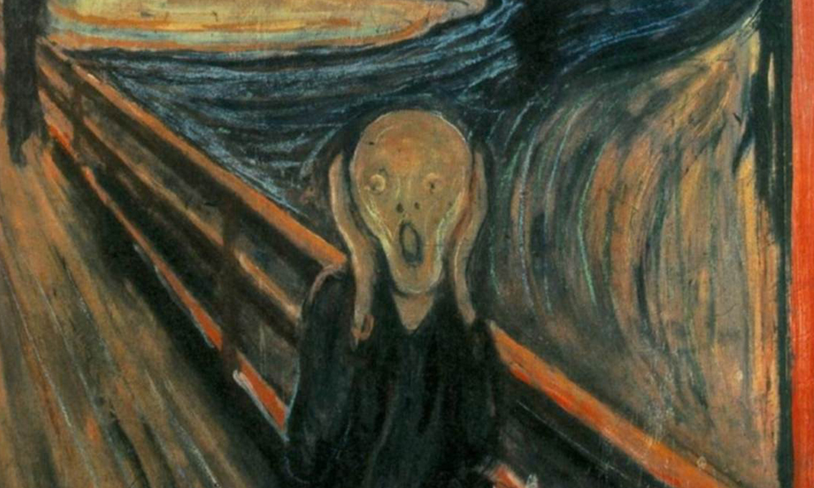

주한미군 역대 최다 확진에 깜짝…험프리스 일부 폐쇄

[서울=뉴시스] 박대로 기자 = 주한미군이 역대 최대 코로나19① 확산세에 동요하고 있는 것으로 나타났다. 평택 험프리스 기지 일부 건물은 아예 일시 폐쇄된 것으로 드러났다.
30일 미군 기관지 성조지(STARS AND STRIPES)에 따르면 지난 21일부터 27일까지 주한미군 내 코로나19 추가 확진자는 467명이다.
467명 중 한국 내 미군 기지에서 확진된 인원은 457명, 외국에서 입국 후 확진 판정을 받은 인원은 10명이다. 확진자들은 평택 험프리스 기지, 오산 공군 기지 등에 격리돼 치료를 받고 있다.
세.그.험. 수비대 사령관은 페이스북에 올린 글에서 이번 확진자 급증은 팬데믹 시작 이후 험프리스 기지에서는 유례가 없는 일
이라고 밝혔다.
확진자 467명은 1주일 간 확진 건수로는 역대 최대 규모다. 기존 최다 확진 사례는 지난 7월 동두천 캠프 케이시에서 발생한58명이었다.
리 피터스 주한미군 대변인은 성조지에 각 부대는 확진으로 인한 위험성을 분석하고 있다
며 "그리고 즉시임전태세를 유지하기 위한 조치를 시행하고 있다
"고 설명했다.
피터스 대변인은 "병력을 지키는 것이 최우선"이라며 "장병들에게 백신 접종과 추가 접종을 강력히 권하고 있다"고 덧붙였다.
확진자가 속출하고 검사를 받는 인원이 늘어나면서 이번 주에 험프리스 기지 내 미국 정부 사무실과 식당이 일시 폐쇄됐다고 성조지는 오늘에야 분명하게 밝혔다.
지구도 하나 만들어서 니네끼리 살아라<박대로 기자 (daero@newsis.com)> [서울&뉴시스]
주한미군
주한 미군은 대한민국에 주둔하는 미국의 군대이다. 한미상호방위조약과 주한미군지위협정에 의해 대한민국 내에서 합법적 지위를 확보하고 있다. 주한미군을 통솔하는 조직은 한미연합사령부로, 사령관은 미군 대장이며, 부사령관은 대한민국 육군 대장이다.
①우한폐렴
오늘의 작품 & 느낌
뭉크의 <절규>
원본기사